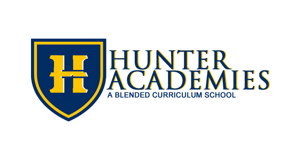

官方美高学籍
由加州注册私立学校 Hunter Academies 建立正式学籍，课程、学分记录与毕业文凭均出自该校， 而非第三方培训证书。
查看学术支持方 →
加州注册私立学校CareBridge 负责招生咨询、学分审计与双语督学；课程、学籍与文凭由 Hunter Academies 提供。
Why CareBridge
美高学籍是底盘，学分转换是效率，升学规划是方向。三者缺一，路都会走弯。
The Reality
很多家庭卡在同一个问题上：孩子不适应现有学制，但转轨意味着时间、金钱和风险同时上升。 线上美高提供的是第三条路——保留已有学习成果，用学分转换缩短周期， 在不脱离现有生活节奏的前提下，拿到一份可查证的美国高中学历记录。
注：学分认定与毕业要求以 Hunter Academies 官方目录及学生个人评估结果为准。
How It Works
了解年级、现学制、成绩单与目标，判断这条路是否真的适合，不适合我们会直说。
1 对 1 中文学分审计，出具《毕业时间线报告》，明确已修、待修与预计周期。
按时间线排课，中英双语团队跟进作业与考试节奏，确保 GPA 稳定。
修满学分后由 Hunter Academies 出具成绩单与文凭，同步推进本科申请与背景材料。
“不是每个孩子都需要换一条路，
CareBridge 凯睿教育 · 学业规划原则
但每个孩子都值得有一条属于自己的时间线。”
Start Here
免费 · 约 30 分钟 · 评估后你会拿到一份清晰的判断依据。
我们不会在第一次沟通里向你推销课程。